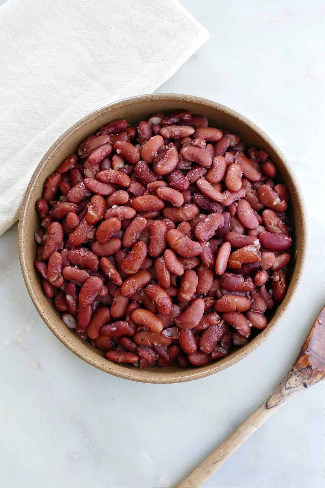

Beans

Description
Beans are an excellent source of protein. They are also high in iron and very nutritious, while being relatively inexpensive. Beans are delicious
Ingredients
- 1 Can of Beans
- 2 Tablespoons Olive Oil
- 1 Packet of Sazon
- 1 Can Tomato Sauce
- 1 Pinch of Adobo
Steps
- Heat Tomato Sauce in pot over medium heat.
- Season with Adobo and Sazon
- Add beans and olive oil.
- Cover pot and occasionally stir.
- Keep in pot until beans are ready.